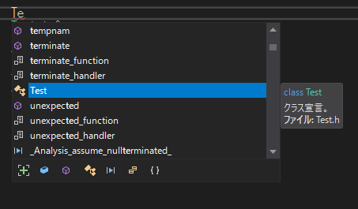
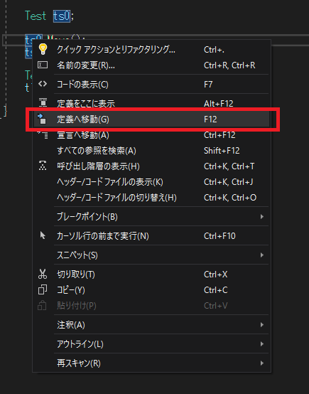
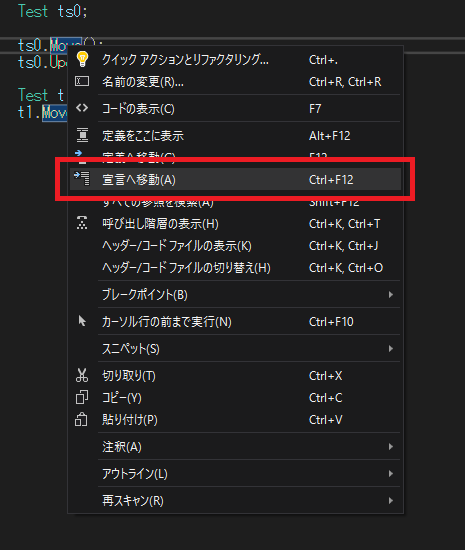
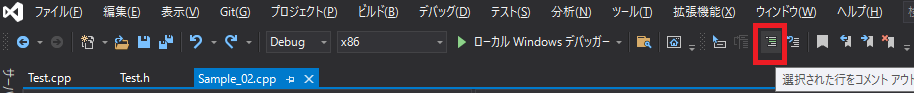
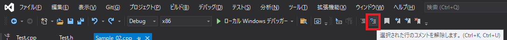
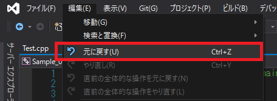
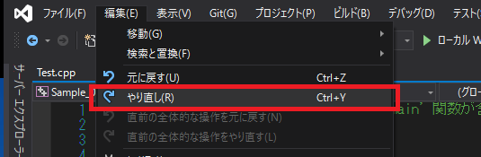

大規模なC++の開発において、高性能なエディタの利用は欠かせません。 このチャプターではMicrosoft社が提供している統合環境、VisualStudioのエディタの機能について学んでいきます。 この節では二つのプログラムを使用します。次のURLからプログラムをダウンロードしておいてください。
VisualStudioには、強力にコードの入力をサポートしてくれるインテリセンスという機能があります。 すでに皆さん使っているのではないかと思いますが、コードを入力すると、残りのコードの候補が出てきます。 あれがインテリセンスの機能です(図1.20)。 図1.20  インテリセンスは消えてしまってもショートカットキーのctrl + スペースを入力すると再度出すことができます。 インテリセンスは非常に強力な機能なので、ドンドン活用しましょう。
※ただし、C++のプロジェクトの規模が大きくなると、インテリセンスは機能しなくなることがほとんどです・・・。
定義へ移動を使うと、クラス定義、変数定義、関数定義、enum定義、構造体定義など、様々な定義にジャンプすることができます。 これも非常に便利なので、ドンドン活用しましょう。 この機能は、定義へ移動したいシンボルにカーソルを合わせて、右クリックで出てくるポップアップメニューから選べば使えます(図1.21)。 図1.21  また、ショートカットキーのF12でも定義へ移動することができます。
※ただし、C++のプロジェクトの規模が大きくなると、定義へ移動は機能しなくなることがほとんどです・・・。 ※そんなに規模が大きくなくても、定義に移動せずに宣言に移動したりしだします。
関数宣言、クラス宣言にジャンプすることができます。 この機能は、宣言に移動したいシンボルにカーソルを合わせて、右クリックで出てくるポップアップメニューから選べば使えます(図1.22)。 図1.22  また、ショートカットキーのCtrl + F12でも宣言に移動することができます。 ※ただし、C++のプロジェクトの規模が大きくなると、定義へ移動は機能しなくなることがほとんどです・・・。 ※そんなに規模が大きくなくても、宣言に移動せずに定義に移動したりしだします。
変数、関数、クラスなどの名前の変更を一括でやってくれます。
この機能は、変更したいシンボルにカーソルを合わせて、右クリックで出てくるポップアップメニューから選べば使えます(図1.23)。
図1.23
選択した行をコメントアウトすることができます。 この機能はメニュー上部の選択された行をコメントアウトを選択すると実行することができます(図1.24)。 図1.24 
選択した行のコメントを削除することができます。 この機能はメニュー上部の選択された行をコメントアウトを選択すると実行することができます(図1.25)。 図1.25 
では、Sample_02/Sample_02.slnを使ってここまでの機能を使ってみましょう。
main.cppに次のプログラムを入力してください。(インテリセンスを積極的に使いましょう)
// step-1 インテリセンスを使ってプログラムを入力する。
Test ts0;
ts0.Mobe();
ts0.Update(0);
では、続いて一旦消えてしまった。インテリセンスを再度表示してみましょう。 main.cppに次のプログラムを入力してください。
// step-1 インテリセンスを使ってプログラムを入力する。
Test ts0;
ts0.M
Testクラス定義とTest::Update()関数の定義にジャンプしなさい。
Test::Update()関数の宣言にジャンプしなさい。
Test::Mobe()関数の名前をMoveに変更しなさい。
変更した内容を元に戻すことができます。この操作は非常に頻繁に行う操作です。必ず覚えましょう。 アンドゥはメニューの「編集/元に戻す」から行うことができます(図1.26)。 図1.26  アンドゥはショートカットキーのctrl + Zでも行うことができます。
アンドゥを取り消すことができます。この操作は非常に頻繁に行う操作です。必ず覚えましょう。 リドゥはメニューの「編集/やり直し」から行うことができます(図1.27)。 図1.27  リドゥはショートカットキーのctrl + Yでも行うことができます。
テキストを検索することができます。この操作はメニューの「編集/検索と置き換え/クイック検索」から行うことができます。 この操作は頻繁に行う操作です。必ず覚えましょう。 図1.27 検索はショートカットキーのctrl + Fでも行うことができます。
では、Sample_02/Sample_02.slnを使ってここまでの機能を使ってみましょう。
次の評価テストを行いなさい。 評価テストへジャンプ